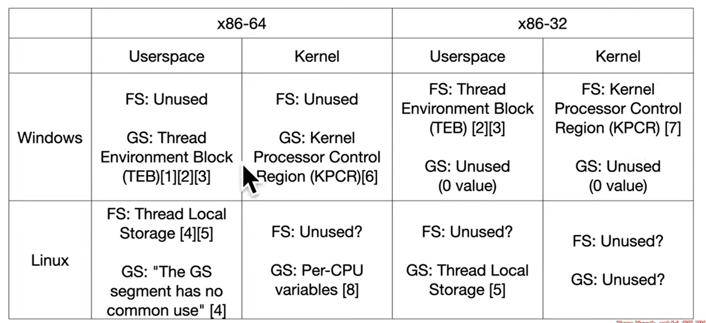

Exchanges the current GS base register value with the value contained in MSR address 0xC0000102.
(#define MSR_KERNEL_GS_BASE 0xc0000102 /* SwapGS GS shadow */)
The swapgs assembly instruction is specific to the x86-64 architecture and is used to perform a kernel-to-user transition on certain operating systems. It is not a commonly used instruction in regular application code but is primarily utilized in the context of kernel mode transitions or system call handling.
When the processor is running in 64-bit mode, the swapgs instruction is used to swap the value of the GS (General Segment) register between two different privilege levels:
When executing in kernel mode (ring 0), the GS register points to kernel-specific data structures.
When executing in user mode (ring 3), the GS register points to user-specific data structures.
During a system call or kernel entry, the operating system may need to switch the GS register value to access the relevant data structures in the kernel or user mode. The swapgs instruction is used in this context to perform the register swap efficiently.
from the manual:
"When using SYSCALL to implement system calls, there is no kernel stack at the OS entry point. Neither is there astraightforward method to obtain a pointer to kernel structures from which the kernel stack pointer could be read.Thus, the kernel cannot save general purpose registers or reference memory.
By design, SWAPGS does not require any general purpose registers or memory operands. No registers need to besaved before using the instruction. SWAPGS exchanges the CPL 0 data pointer from the IA32_KERNEL_GS_BASEMSR with the GS base register. The kernel can then use the GS prefix on normal memory references to accesskernel data structures. Similarly, when the OS kernel is entered using an interrupt or exception (where the kernelstack is already set up), SWAPGS can be used to quickly get a pointer to the kernel data structures."
